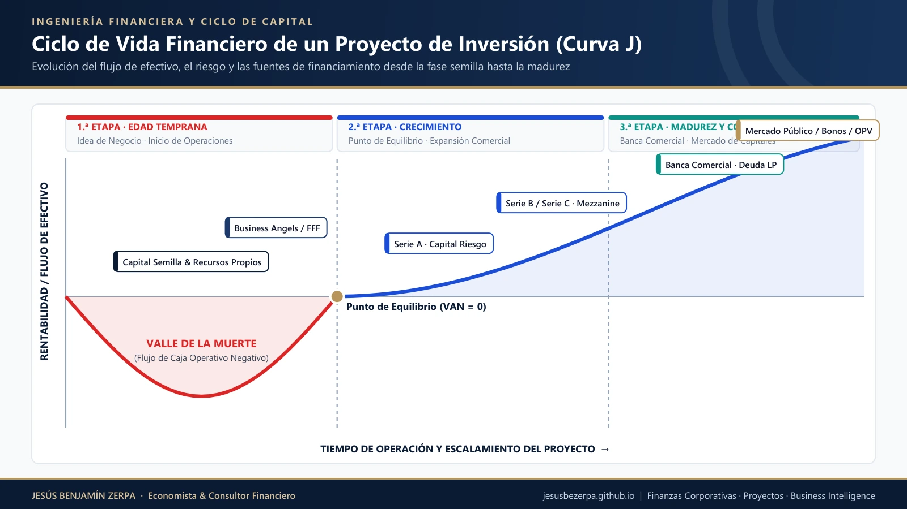
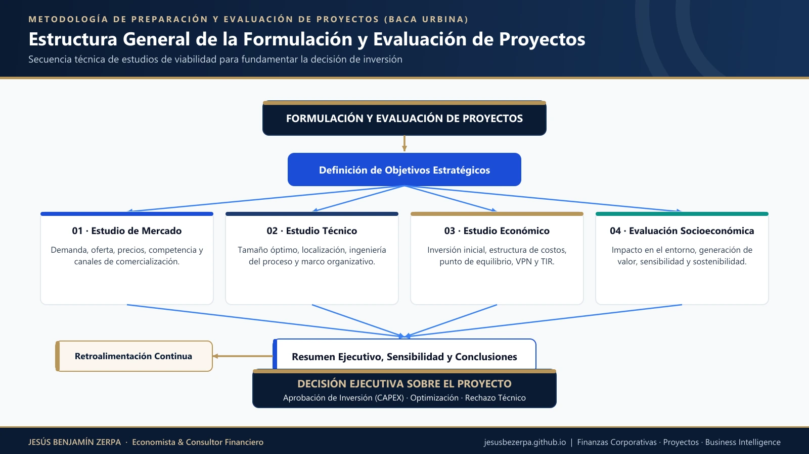
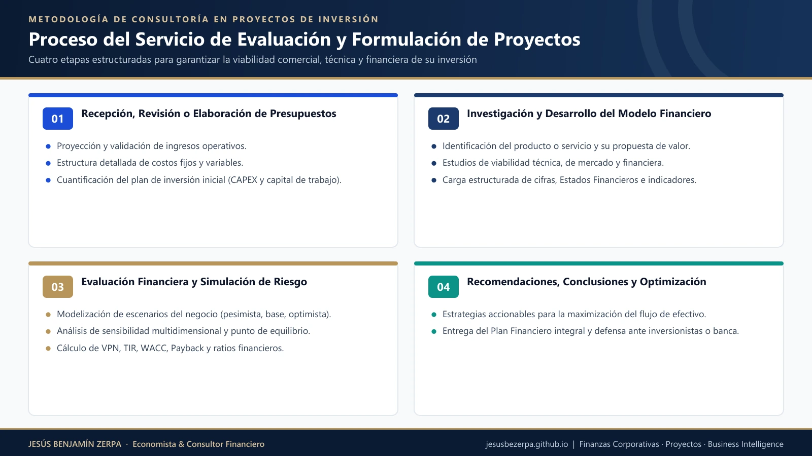
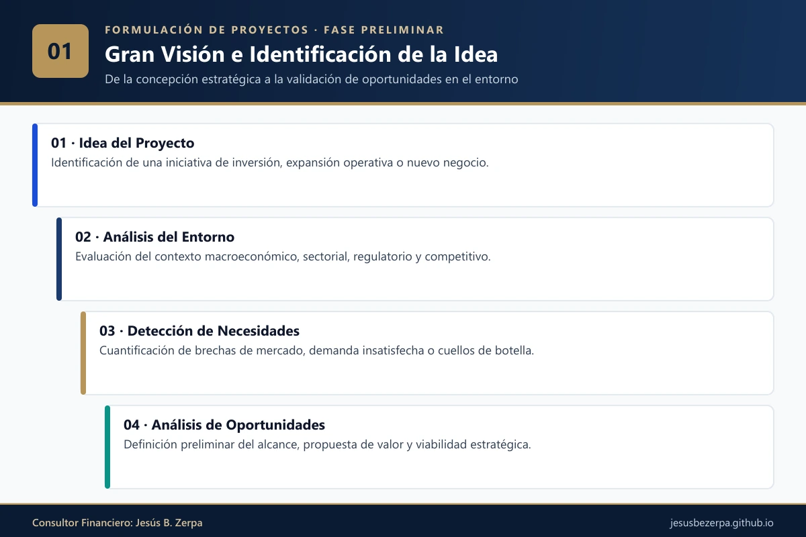
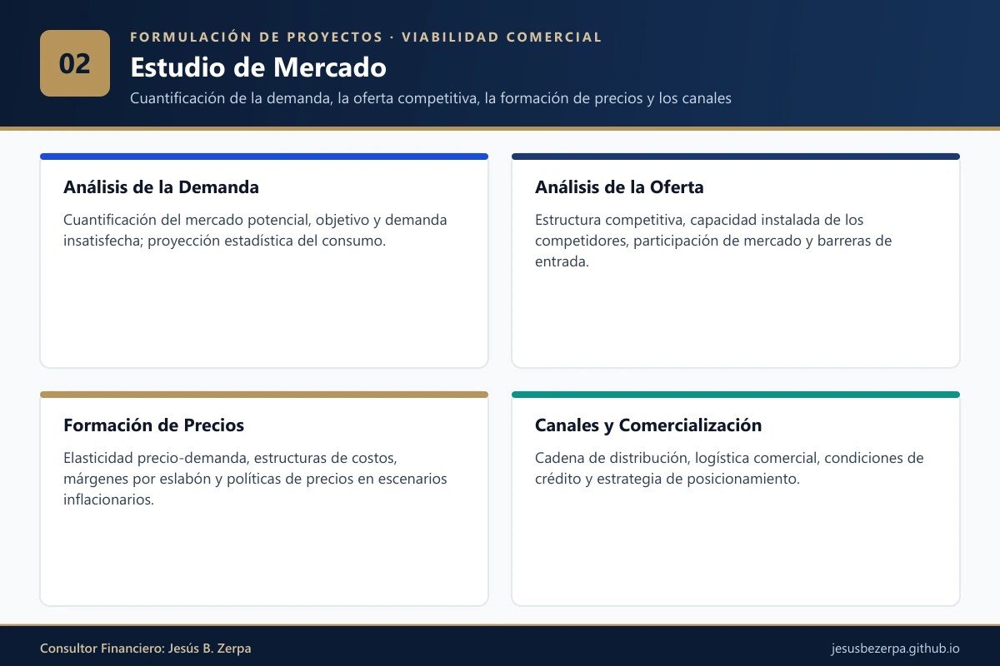
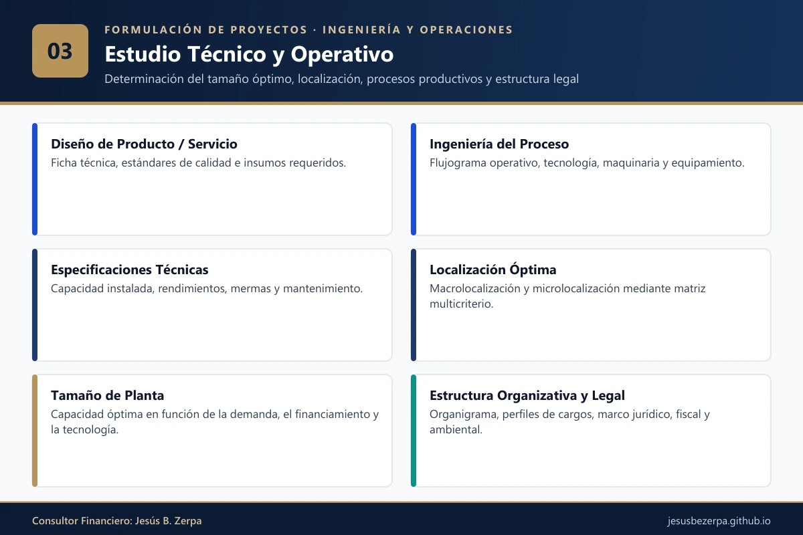
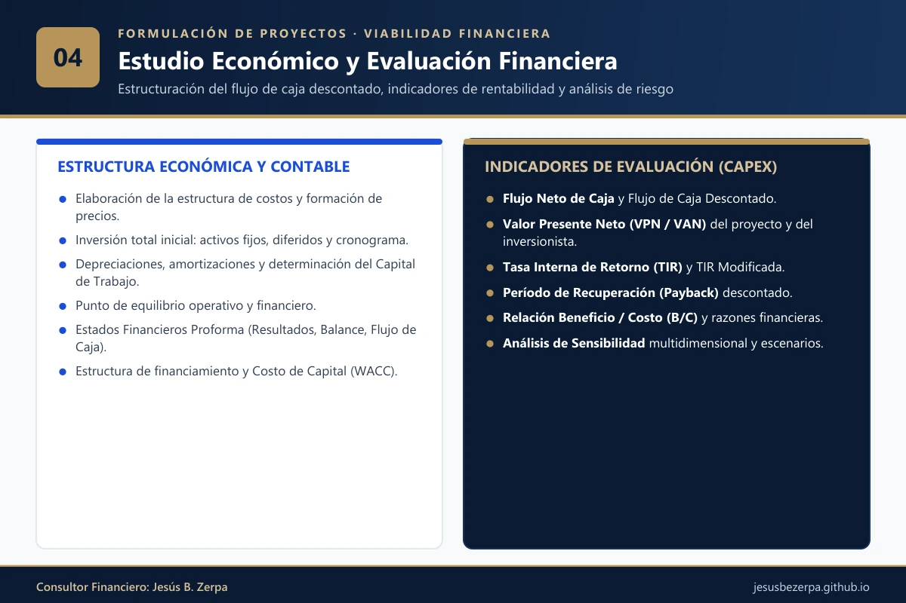
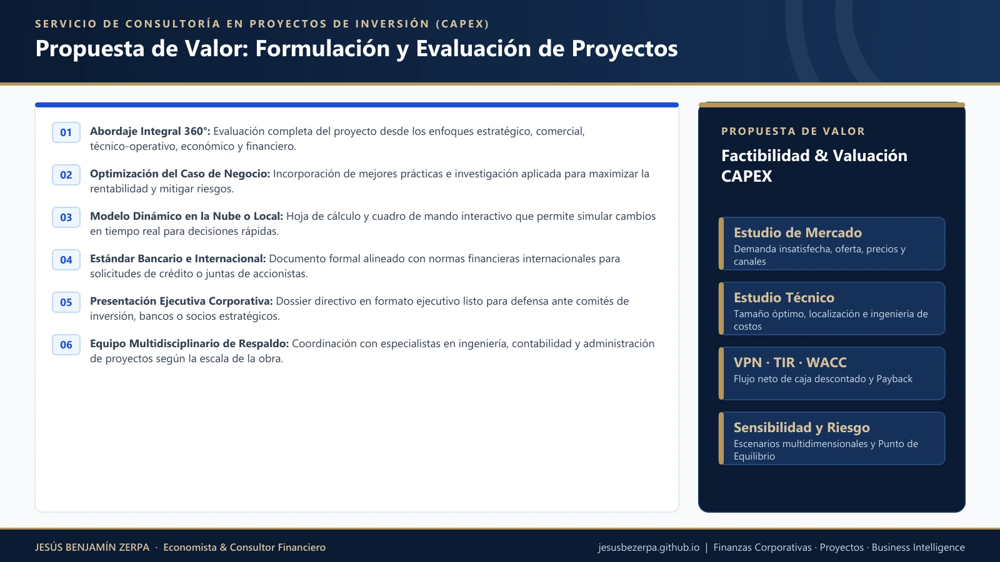

1. ¿Planeas Poner en Marcha un Plan de Negocio? Comenzar con Buen Pie
Antes de comprometer capital en la creación de una empresa, el lanzamiento de una nueva línea de productos o la expansión de un portafolio existente, resulta indispensable responder con rigor cuantitativo a las interrogantes del ciclo del negocio: ¿existe demanda potencial insatisfecha?, ¿cuál es el tamaño óptimo de operación?, ¿a qué precio y a través de qué canales se comercializará?, ¿cuál es la inversión inicial y el capital de trabajo requerido?, y ¿en cuánto tiempo se recupera el capital invertido superando el costo de oportunidad?
Realidad frente a Expectativa: Conocer el Mercado
A lo largo de mi ejercicio profesional fui testigo de cómo diversas empresas de un mismo sector, aun compartiendo ventajas comparativas iniciales y propuestas prometedoras, no lograron superar los primeros cinco años de operación o quedaron estancadas con una participación marginal. En contraste, aquellas organizaciones que fundamentaron sus decisiones en estudios rigurosos de factibilidad lograron consolidarse como líderes de su segmento o reinventar su modelo de negocio (know-how) anticipándose a nuevos nichos de mercado.
2. El Emprendimiento en la Región: Qué Dicen las Cifras
La publicación «Emprender un Futuro Naranja» del Banco Interamericano de Desarrollo (BID), basada en una muestra regional de 200 emprendedores, concluye que alrededor del 70% de los nuevos negocios fracasa debido a tres causas recurrentes: una deficiente planificación financiera, la falta de comprensión profunda del mercado y una gestión inadecuada del flujo de efectivo.
Asimismo, los estudios de la Comisión Económica para América Latina y el Caribe (CEPAL) advierten una realidad contundente:
«En promedio, el 80% de las PYMES fracasa antes de los cinco años y el 90% de ellas no llega a los diez años; en las economías en desarrollo, entre un 50% y un 75% deja de existir durante los tres primeros años, y solo entre el 10% y el 20% permanece activo al cumplirse el quinto año» (CEPAL, 2003, p. 1).
De igual manera, Nancy Flores (2015), en su trabajo de grado titulado «Estrategias Financieras Aplicadas al Proceso de Sostenibilidad y Crecimiento de las PYMES del Sector Comercio» —presentado para optar al título de Magíster en Administración de Empresas, mención Finanzas, en la Universidad de Carabobo—, evidencia que el desconocimiento de herramientas de evaluación financiera lleva a muchos empresarios a gestionar sus negocios por intuición o ensayo y error, prescindiendo de indicadores críticos de liquidez, solvencia, endeudamiento y rentabilidad.
3. Más Allá de la Puesta en Marcha: Superar el «Valle de la Muerte»
Se considera que una empresa supera su primera prueba de viabilidad cuando mantiene operaciones rentables durante sus primeros cinco años —horizonte que suele coincidir con el primer ciclo de amortización de las inversiones iniciales—. Durante esa etapa, la organización debe consolidar mecanismos de control interno, adquisición tecnológica, presupuestación y posicionamiento comercial.
En la siguiente gráfica se ilustra el ciclo de vida de un proyecto de inversión; el tramo inicial de flujos netos negativos se conoce en finanzas como el «Valle de la Muerte», etapa crítica donde se detiene cerca del 80% de los emprendimientos:

El «Valle de la Muerte» comprende el período entre el desembolso de la inversión inicial y el punto de equilibrio operativo, durante el cual la probabilidad de insolvencia se incrementa si el capital de trabajo ha sido subestimado o si la velocidad de adopción comercial es menor a la prevista.
4. ¿Qué es la Formulación y Evaluación de un Proyecto de Inversión?
Un proyecto de inversión es un plan técnico y económico al que, si se le asigna un monto determinado de capital y se le combinan insumos humanos, materiales y tecnológicos, producirá un bien o servicio capaz de satisfacer una necesidad generando valor económico y social.
La Formulación y Evaluación de Proyectos de Inversión es el conjunto de estudios multidisciplinarios que permite determinar —antes de comprometer los recursos— si dicha inversión es comercialmente viable, técnicamente factible, legalmente procedente y financieramente rentable, asegurando que los recursos escasos se asignen a la mejor alternativa disponible.


5. Los 4 Pilares Principales del Estudio

Definición del propósito, alcance y pertinencia estratégica del proyecto, incluyendo la primera estimación de las actividades requeridas, la inversión global, los costos operativos anuales y los ingresos proyectados.

Identificación y cuantificación estadística de la demanda potencial insatisfecha y de la oferta competitiva, análisis de precios nacionales e internacionales y diseño de los canales de comercialización.

Determinación del tamaño óptimo de planta u operación, macrolocalización y microlocalización óptima, ingeniería del proceso productivo o de servicio, estructura organizacional y marco legal aplicable.

Sistematización monetaria de las inversiones fijas y diferidas, capital de trabajo, estructura de costos, estados financieros proforma (12 meses y 5 años), cálculo del WACC/TMAR, VPN, TIR, Payback y sensibilidad.
6. Desglose Detallado del Contenido del Estudio
📊 Del Estudio de Mercado
- Definición técnica, naturaleza y usos del producto o servicio
- Análisis histórico y econométrico de la demanda
- Cálculo de la demanda potencial proyectada insatisfecha
- Análisis de la oferta competitiva e importaciones/exportaciones
- Análisis de precios nacionales e internacionales y proyección tarifaria
- Canales de distribución y estrategia de introducción al mercado
⚙️ Del Estudio Técnico
- Determinación de la capacidad y tamaño óptimo de planta u operación
- Localización óptima del proyecto (método cualitativo por puntos / cuantitativo)
- Ingeniería del proyecto, selección de tecnología y equipamiento
- Distribución física de áreas (layout) y flujogramas de procesos
- Organización del capital humano y organigrama general
- Marco jurídico, regulatorio, tributario y sanitario de la empresa
💰 Del Estudio Económico-Financiero
- Estructura de costos: producción, administración, ventas y financieros
- Formación técnica del precio de venta y cálculo del Punto de Equilibrio
- Inversión total inicial (fija y diferida), cronograma de desembolsos y capital de trabajo
- Estados Financieros Proforma (primer ejercicio mensualizado y proyección a 5 años): Estado de Resultados, Presupuesto de Tesorería, Flujo de Efectivo y Balance General
- Costo de capital (TMAR / WACC) y tabla de amortización de financiamiento
📈 Evaluación Económica y Administración de Riesgo
- Flujo Neto de Caja y Flujo de Caja Descontado (DCF)
- Valor Presente Neto (VPN / VAN) y Tasa Interna de Retorno (TIR)
- Relación Beneficio / Costo (B/C), Período de Recuperación (Payback) y razones financieras
- Análisis de sensibilidad multivariable y escenarios de estrés
- Medición y mitigación del riesgo de mercado (sectorial) y riesgo financiero
7. Propuesta de Valor del Servicio
